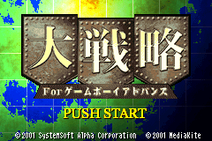

Daisenryaku for Game Boy Advance (Japan)
Flash 512K Save Format Spec gbakit Built-In 🎮 4P Link 🔌 Mobile Adapter GB (CGB-005)
Cartridge Identity
- Game Code
ADSJ(FamilyADS)- Header Title
DAISENRYAKU- Maker / Revision
2Q/ rev0- ROM Size
- 8.0 MiB (8,388,608 B)
- Save Media
Flash 512K- SHA-256
41fbc763134750682a5a36a3237c90a1ce354bc3d52cc4077921a0ed2549f8b0- Engine / SDK Group
comm-009(51 families)
Screenshots


Niche & Rare Accessories
Detected niche/rare GBA accessory support: 🔌 Mobile Adapter GB (CGB-005).
Full 343-ROM corpus breakdown in the Cartridge Hardware & Niche Accessories Reference · auto-detected from ROM bytes via
gbakit inspect.
- Mobile Adapter GB (CGB-005)
- Mobile System GB HTTP/1.0 + SMTP/POP3 stack
Link Cable & Multiplayer Communications
This title contains detected communication capabilities: 🎮 4P Link.
Detailed protocol specifications, SIO registers, Joybus commands, and MultiBoot sequences are documented in the Link & Multiplayer Reference.
- Multi-Player SIO (4P)
- 16-bit ring network · SIOCNT (
0x04000128) literals:0x02aa98,0x02ab78,0x02abc0· SIODATA32/SIOMULTI0 (0x04000120) literals:0x02ad44,0x0352bc,0x0373e8
Battery Save Format Specification
Open Full Save Format SpecDownload save-format.json
- Specification Coverage
- 4 mapped fields · 0 verified checksum(s) · Confidence: HIGH
- gbakit Built-In Support
- Built-in (ADSJ)
gbakit save verify ADSJ save.sav
gbakit save decode ADSJ save.sav
gbakit save fix ADSJ damaged.sav -o repaired.savObserved Battery Save Layout
- Fill Byte & Active Size
0xFFfill · 20,480–20,480 / 65,536 B active (entropy 0.03 bits/B)- Active Offset Ranges
0x0–0x1FFF,0x5000–0x5FFF,0x9000–0x9FFF,0xD000–0xDFFF(4 total)- ASCII Magic / Headers
GBATACTICS00008- Observed Variable Regions
- 0 bytes across 0 spans: None
- Candidate Checksum/Counter Spans
- None
ROM Assets, Compression & Audio
- BIOS Compression
- LZ77 (
0x10): 51 streams · RLE (0x30): 3 streams - ROM Pointer Tables
- 11 tables (3 pointing to validated compressed streams)
- SDK Backup Tags
FLASH_V126
Text, Fonts & Scene Data
- Primary Text Encoding
- Shift-JIS (uncompressed) (
4ASCII strings ·200Shift-JIS runs) - Font & VWF Indicators
- VWF Width Table 1bpp Font · BIOS SWIs: BitUnPack
0x10:46· LZ770x11/12:279· Huffman0x13:4· RLE0x14/15:7 - Scene & Packaging
12ROM pointer tables (≥32 entries,3≥200) ·0relativeu32TOCs ·228OAM metasprite hits
Password System
- Save Media
- Battery-Backed (FLASH_512K)
- Password Class
- Password UI Strings Detected (
password_ui_strings_only)
Hardware MMIO Subsystems
ppu_display0x80013c0save_bus_sram_flash0x80342a0,0x8034600,0x80346ac,0x8034894